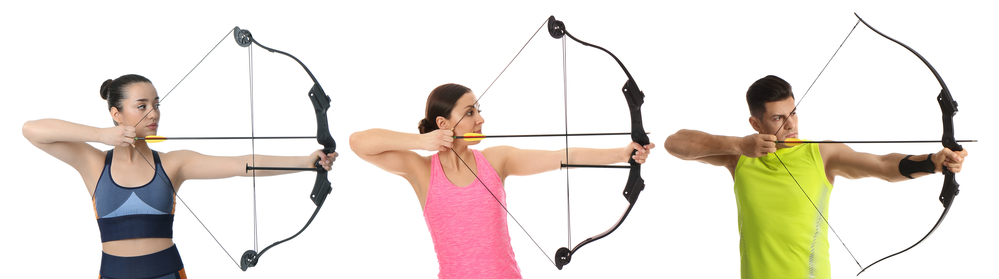

A Journey Through Time
We can trace the history of the club and its former leaders through history to the great Master Bowman Talia.

1013 CE - Medieval Beginnings
Founded as a gathering of elite marksmen dedicated to mastering the art of the traditional bow.
The Talia Era - Legendary Leadership
Under Master Bowman Talia, the club established rigorous training disciplines and tactical traditions that still influence our practices today.
Modern Day - Centuries of Adaptation
We successfully transitioned from a medieval combat guild into a celebrated modern sporting institution, preserving ancient focus alongside contemporary techniques.
The Club Today

Urban Training Grounds
Our central London facilities offer premium, weather-sheltered indoor ranges and vibrant outdoor shooting spaces with 18-metre indoor target lanes and flexible outdoor distances.
Open to All
We provide structured induction courses for complete beginners as well as advanced coaching for elite tournament archers. Everyone is welcome.
Opening Hours
Tue–Fri: 12:00 PM – 9:00 PM
Sat–Sun: 9:00 AM – 6:00 PM
Monday: Closed (maintenance)
Active Calendar
Our members participate in internal seasonal leagues, community social nights, and regional target archery competitions throughout the year.